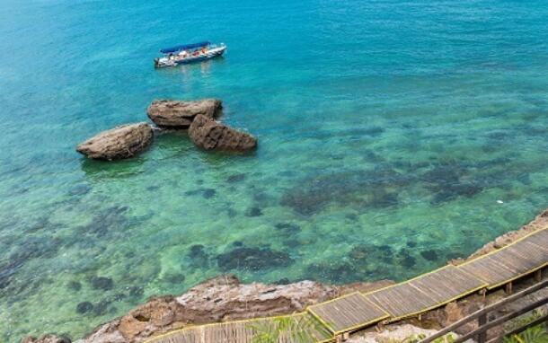
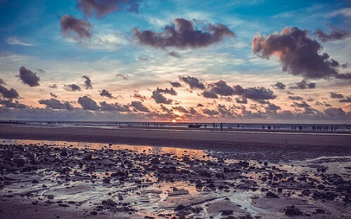
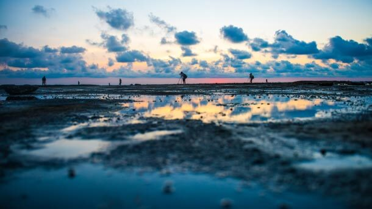
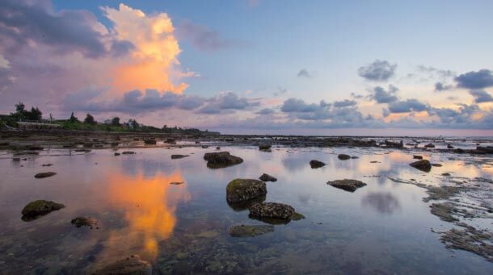

morly旅游圈
涠洲岛，位于广西壮族自治区北海市北部湾海域中部，北临广西北海市，东望雷州半岛，东南与斜阳岛毗邻，南与海南岛隔海相望，西面面向越南。涠洲岛总面积24.74平方千米，岛的最高海拔79米。岛内景区包括鳄鱼山景区、滴水丹屏景区、石螺口景区、天主教堂景区和五彩滩景区等。涠洲岛是火山喷发堆凝而成的岛屿，有海蚀、海积及溶岩等景观，有“蓬莱岛”之称，是中国地质年龄最年轻的火山岛，也是广西最大的海岛。
迎着徐徐拂面的海风，光着脚丫踩在柔软的沙滩上，阳光洒在身上，很温暖，海风将海面吹起一片涟漪，举目远眺，眼前是散开的蔚蓝。没有人工雕琢的刻意的精美，却彰显出大自然的鬼斧神工，心沉静了下来，听从内心的声音，感受新的自我。这，便是涠洲岛的魅力。 涠洲岛全年平均温度是23摄氏度左右，冬暖夏凉，最适宜的时间是六月份，这时阳光正好，海水正蓝，温度适宜，可以下水玩耍；休渔期过了，海鲜种类增多，可以一饱口福；这个时间也是夜钓鱿鱼的好时机。
涠洲岛总面积24.74平方千米，我们应该如何游览呢？在这里为大家提供一种游览方式。
第一天：上岛
第一天直接坐船去到涠洲岛，船票要提前订好，需要两个小时左右才能到岛上哦，如果有晕船的一定备好晕车药！随后就先安排好酒店，房间，短暂的休息放松下，适应一下环境。第二天北海市区:北海银滩，老街，北部湾
早上睡到自然醒，可以去海边走走，适应适应海边的气候环境，不急着走行程，白天跟随司机去市区转转，大致了解岛上的情况以及一些用品店的分布。并为后面的住宿提前做好准备。
第三天涠洲岛游：自由行涠洲岛、石螺口海滩（环岛游
涠洲岛上景区很多，也比较分散，所以主要跟大家简单介绍下景点，其次大家看图就可以感受到！而石螺口海滩是位于涠洲岛西部石螺口的一处海滩，沿岸有火山岩和海蚀岩，景非常的美。
第四天精华景区
第四天可以去自由行五彩滩、盛塘天主教堂、贝壳沙滩、南湾市场【海滩篝火晚会】， 我印象最深的就是贝壳海滩了，沙子松软细腻，游泳、潜水还有捡贝壳，潜水还是非常不错的。 晚上，那自然是最爽的啦，吃海鲜，特便宜的海鲜任你吃，大闸蟹、生蚝、鱿鱼、各种螺、鱼等，吃到不想吃，然后饱饱的睡上一晚，哈哈，想想都流口水~还有篝火晚会哦！！
第五天:离开
收拾好行李后打车或者提前订好车来到码头，坐船离开涠洲岛，然后在打车去机场或者高铁站完成您这次涠洲岛之行
经费预算
往返船票：300元/人（大船普通舱）
上岛门票：115元/人（涵盖几乎所有景点）
住宿费用：360元/人（三晚精品标间）
吃饭费用：300元/人（四天三晚）
游玩租车：20元/人（岛上有公交车）
内容整理至网络，如有侵权，请联系我们！1255394075@qq.com
 